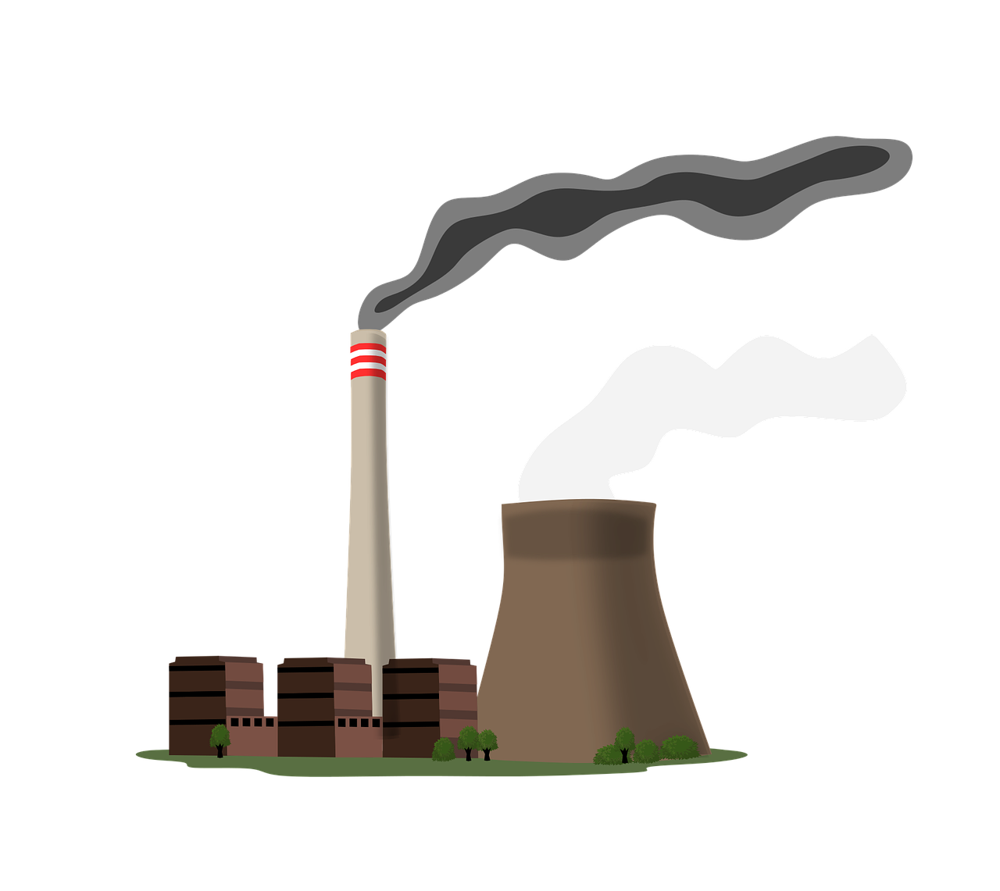
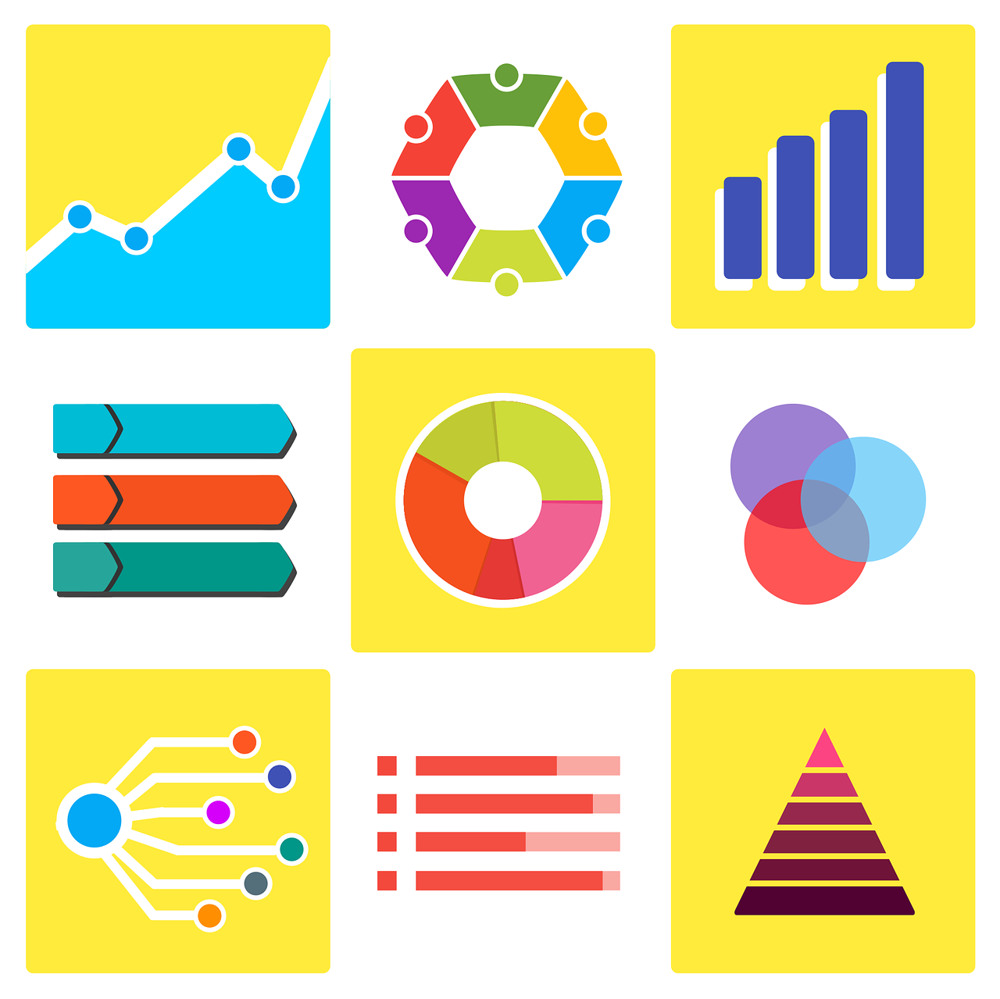
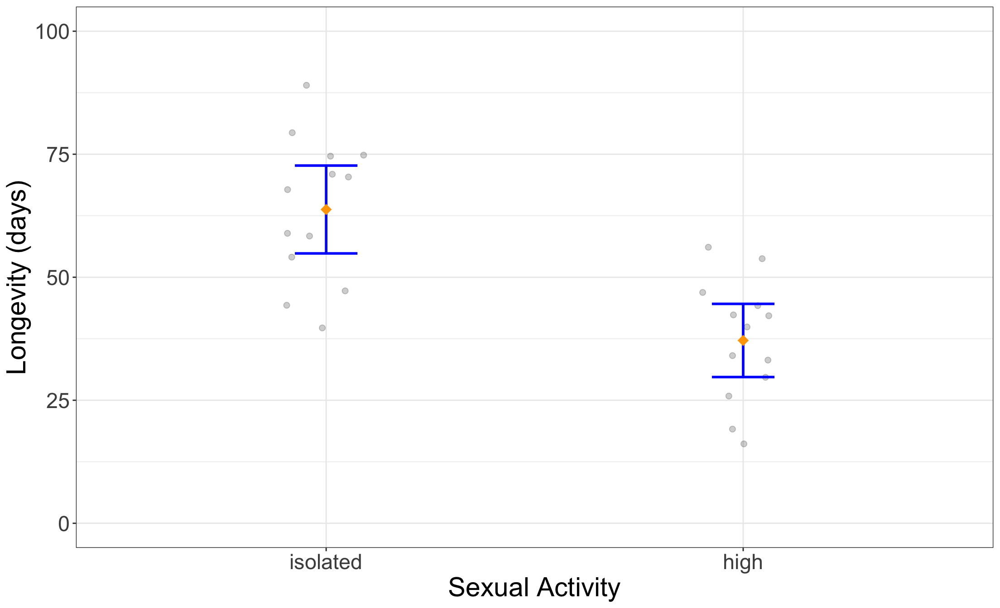

| ID | Radius | Texture | Perimeter | Area | Smoothness | Class |
|---|---|---|---|---|---|---|
| 926125 | 1.9275296 | 1.3485941 | 2.1001278 | 1.9667039 | 0.9627130 | M |
| 926424 | 2.1091388 | 0.7208383 | 2.0589739 | 2.3417954 | 1.0409262 | M |
| 926682 | 1.7033556 | 2.0833009 | 1.6145108 | 1.7223261 | 0.1023682 | M |
| 926954 | 0.7016669 | 2.0437755 | 0.6720844 | 0.5774446 | -0.8397450 | M |
| 927241 | 1.8367249 | 2.3344032 | 1.9807813 | 1.7336925 | 1.5244257 | M |
| 92751 | -1.8068114 | 1.2207179 | -1.8127934 | -1.3466044 | -3.1093489 | B |
Lecture 2
Introduction to Biostatistics
G. Alexi Rodríguez-Arelis
Department of Statistics, Faculty of Science at UBC
Attribution
This lecture is based on previous material from Gabriela Cohen Freue and Tiffany Timbers from the Department of Statistics at UBC.
Something about me…

- I am an Assistant Professor of Teaching in the Department of Statistics at UBC.
- My graduate teaching is focused on the Master of Data Science, specifically in statistics.
- My undergraduate teaching has been mainly focused on scientific communication.
- My website: https://alexrod.netlify.app
- My email: alexrod@stat.ubc.ca
Agenda
- Module learning objectives
- What is the question?
- So you know the type of question…
- Practice
- The statistical landscape in
R - Example of an inferential analysis in
R - Summary
1. Module learning objectives
By the end of this module, you should be able to:
- Identify the different types of data analysis questions and categorize a question into the correct type.
- Identify a suitable analysis type to answer an inferential question, given the data set at hand.
- Use the
Rprogramming language to carry out analysis to answer inferential questions. - Interpret and communicate the results of the analysis from an inferential question.
2. What is the question?

2.1. Descriptive
- One that seeks to summarize a characteristic of a set of data.
- No interpretation of any summarized result is needed.
- For instance, we can compute the average of any given variable in our dataset.
- If we do not interpret this average with respect to other data attributes, then our inquiry is merely descriptive.

Further descriptive examples
- What is the frequency of viral illnesses in a set of data collected from a group of individuals?
- How many people live in each US state?
2.2. Exploratory
- One in which you analyze the data to see if there are patterns, trends, or relationships between variables.
- This inquiry looks for patterns that would support proposing a hypothesis to test in a future study.
- Nevertheless, any exploratory insights would be limited to the data at hand.

Exploratory examples
- Do diets rich in certain foods have differing frequencies of viral illnesses in a set of data collected from a group of individuals?
- Does air pollution correlate with life expectancy in a set of data collected from groups of individuals from several regions in the United States?

2.3. Inferential
- One in which you analyze the data to see if there are patterns, trends, or relationships between variables in a representative sample of a population of interest.
- We want to quantify how much the patterns, trends, or relationships between variables apply to all individual units in the population.
- This class of inquiries would require formal statistical tools such as hypothesis testing or regression modelling.
Inferential examples
- Is eating at least 5 servings a day of fresh fruit and vegetables associated with fewer viral illnesses per year?
- Is the gestational length of first born babies the same as that of non-first borns?
2.4. Causal
- This inquiry asks about whether changing one factor will change another factor, on average, in a population.
- Sometimes, the underlying design of the data collection, by default, allows you to answer a causal question (e.g., randomized experiment or trial).
However…
- In other cases, the data collection does not allow the analysis to establish any causality.
- In particular, in observational studies, treatments are not controlled by design!
- Observed confounders can be included in the analysis but unobserved ones usually exist. Thus, causal effects cannot be naively established.
Causal examples
- Does eating at least 5 servings a day of fresh fruit and vegetables cause fewer viral illnesses per year?
- Does smoking cause cancer in BC elderly population?
Note: Designing an experiment where people are forced to smoke will be unethical! Observational data is often used in this case.
2.5. Mechanistic
- One that tries to explain the underlying mechanism of the observed patterns, trends, or relationship (i.e., how does it happen?).
Mechanistic examples
- How do changes in diet help to a reduction in the number of viral illnesses?
- How does airplane wing design changes air flow over a wing, leading to decreased drag?
Challenge 1
- What kind of statistical question is this?
Is a yet undiagnosed patient’s breast cancer tumor malignant or benign?
Answer:
It is predictive. Given some observed previous data, we would need to train a statistical or machine learning model and use the modelling estimates to deliver a diagnosis prediction conditioned on the patient characteristics.
Challenge 2
- What kind of statistical question is this?
Is inhalation of marijuana associated with lung cancer?
Answer:
It is inferential since the question above aims to quantify an association between two variables of interest: inhaling marijuana versus lung cancer (both are binary, i.e., yes or no).
Challenge 3
- What kind of statistical question is this?
Does a truncation of the BRCA2 gene cause cancer?
Answer:
It is causal, not just because of the word “cause” but also for the context of the question. A gene truncation involves a experimental study to check whether there is an outcome from this study: cancer appearance.
Challenge 4
- What kind of statistical question is this?
Are there sub-types of ovarian tumors?
Answer:
It is descriptive. We merely seek to summarize a given information in our dataset, which might be contained in a column called
Type of Ovarian Tumor. That said, we are not seeking to make any further interpretations on these summarized data in the context of this inquiry.
3. So you know the type of question…

3.1. What is next?
- This helps narrowing down the possibilities of the kind of analysis you might want to do!
- For example, if you have the question:
How many viral illnesses will someone have next year?
- And you identify that it is predictive, you could narrow down that some kind of statistical or machine learning model might help you answer that.
Then…
- You would need to go a step deeper and look at the data that you have, and see which kind of statistical or machine learning model is most suitable for your data.
- We can use some hand modelling toolboxes:
- The scikit-learn algorithm cheat sheet for predictive inquiries.
- The regression mind map for inferential, causal, and predictive inquiries.
Another example
- If you have the question:
Is the gestational length of first born babies the same as that of non-first borns in Vancouver Island?
- And you identify that it is inferential. You could narrow down that some kind of statistical inference approach might help you answer that.
3.2. Then, again…
- You need to go a step deeper and look at the data that you have, and see which kind of statistical inference approach is the most suitable for your data.
4. Practice
4.1. Case 1
- Question:
Is a yet undiagnosed patient’s breast cancer tumor malignant or benign?
- We can approach the above predictive inquiry via the Wisconsin Breast Cancer Database and a binary logistic regression model which would allow to include additional features.
The Wisconsin Breast Cancer Database
- The original dataset, from Wolberg and Mangasarian (1990), can be found in the UC Irvine Machine Learning Repository.
- The
Rpackage {mlbench} contains a copy of this dataset. - An illustration of this dataset (whose \(n = 699\)) can be seen below.
4.2. Case 2
- Question:
Is inhalation of marijuana associated with lung cancer?
- We can approach the above inferential inquiry via a \(\chi^2\) test. Or a binary logistic regression model which would allow to include additional features.
Some simulated data
| ID | Sex | Gender | Age | Smoker | Marijuana Use | BMI | Lung Cancer |
|---|---|---|---|---|---|---|---|
| 52343 | male | fluid | 35 | 1 | never | 22.3 | 0 |
| 59726 | male | male | 43 | 0 | frequent | 18.0 | 0 |
| 58030 | male | male | 29 | 0 | sometimes | 32.5 | 1 |
| 58890 | female | female | 54 | 0 | frequent | 20.0 | 0 |
| 55325 | female | female | 37 | 0 | never | 26.1 | 0 |
| 59145 | male | male | 51 | 0 | never | 29.8 | 1 |
4.3. Case 3
- Question:
Does a truncation of the BRCA2 gene cause cancer?
- We can approach the above inferential inquiry via a \(\chi^2\) test. Or a binary logistic regression model which would allow to include additional features.
Some simulated data
| ID | Sex | Gender | Age | Smoker | BMI | BRCA2 Truncation | Cancer |
|---|---|---|---|---|---|---|---|
| 26278 | male | fluid | 35 | 1 | 22.3 | 1 | 0 |
| 24264 | male | male | 43 | 0 | 18.0 | 0 | 0 |
| 23233 | male | male | 29 | 0 | 32.5 | 1 | 1 |
| 28287 | female | female | 54 | 0 | 20.0 | 0 | 1 |
| 25206 | female | female | 37 | 0 | 26.1 | 0 | 0 |
| 29266 | male | male | 51 | 0 | 29.8 | 0 | 1 |
4.4. Case 4
- Question:
Are there sub-types of ovarian tumors?
- We can approach the above descriptive inquiry via some data wrangling and exploratory data analysis (EDA).
Some simulated data
| ID | Radius | Texture | Perimeter | Area | Smoothness |
|---|---|---|---|---|---|
| 926125 | 1.9275296 | 1.3485941 | 2.1001278 | 1.9667039 | 0.9627130 |
| 926424 | 2.1091388 | 0.7208383 | 2.0589739 | 2.3417954 | 1.0409262 |
| 926682 | 1.7033556 | 2.0833009 | 1.6145108 | 1.7223261 | 0.1023682 |
| 926954 | 0.7016669 | 2.0437755 | 0.6720844 | 0.5774446 | -0.8397450 |
| 927241 | 1.8367249 | 2.3344032 | 1.9807813 | 1.7336925 | 1.5244257 |
| 92751 | -1.8068114 | 1.2207179 | -1.8127934 | -1.3466044 | -3.1093489 |
4.5. Some key notes
- Identifying whether there is a response variable is important!
- The kind of response variable/target is critical for narrowing down the method.
- The explanatory variables/predictors/features are also important, but we consider these after the response variable.
4.6. A question for you!
- Write down one statistical question you are trying to answer with your research.
- Identify the type of question it is.
5. The statistical landscape in R
- Let us check the {tidyverse} collection of
Rpackages designed for data science.

6. Example of an inferential analysis in R
Is sexual activity associated with the longevity of male fruit flies?
What kind of question is this?
Inferential!
6.1. Data
- Fruit flies were divided randomly into groups of 13 each.
- The response was the longevity of the fruit fly in days.
- One group was kept solitary (
isolated), while another was given 8 virgin females per day (high).
Data wrangling
fruitfly_data <- fruitfly |>
select(longevity, activity) |>
filter(activity == c("isolated", "high")) |>
mutate(activity = fct_drop(activity))
head(fruitfly_data) longevity activity
25 40 isolated
27 44 isolated
29 47 isolated
31 68 isolated
33 54 isolated
35 71 isolated longevity activity
114 34 high
116 47 high
118 42 high
120 54 high
122 56 high
124 44 high6.2. So how should we analyze this data?
- What is our response variable? What kind of data is it?
The response is variable
longevity, and it is numeric.
- What is our explanatory variable? What kind of data is it?
The response is variable
activity, and it is categorical.
What is a suitable statistical test?
- A \(t\)-test is suitable here (as would be a permutation test for difference of means OR medians, or a Mann Whitney U Test).
- To perform this, we need to parameterize our null (\(H_0\)) and alternative hypotheses (\(H_A\)):
\[\begin{gather*} H_0: \text{There is no difference in mean longevity of sexually} \\ \text{active and non-sexually active male fruit flies.} \\ H_A: \text{There is difference in mean longevity of sexually} \\ \text{active and non-sexually active male fruit flies.} \end{gather*}\]
Always start with a visualization
- The visualization should be related to your question!
- It should complement your statistical method(s).
- We are interested in means; population means!
- So here, we should visualize our estimates of the population means, as well as our uncertainty about them!

Visualizing estimates and their uncertainty
- Calculate estimates and uncertainty.
- Visualize estimates and uncertainty, communicating as much about the underlying sample data as possible!
Calculate estimates and uncertainty
- We calculate the sample means and 95% confidence interval (CI) for a mean using the \(t\)-distribution, assuming independence and the Central Limit Theorem (CLT).
Code
fruitfly_2_estimates <- fruitfly_data |>
group_by(activity) |>
summarise(
mean = mean(longevity),
n = n(),
se = sd(longevity) / sqrt(n()),
df = n - 1,
t_star = qt(0.975, df),
lower = mean - t_star * se,
upper = mean + t_star * se
)
fruitfly_2_estimates# A tibble: 2 × 8
activity mean n se df t_star lower upper
<fct> <dbl> <int> <dbl> <dbl> <dbl> <dbl> <dbl>
1 isolated 63.8 13 4.10 12 2.18 54.8 72.7
2 high 37.2 13 3.41 12 2.18 29.7 44.6Visualization
fruitfly_2_estimates_viz <- ggplot(fruitfly_data, aes(x = activity, y = longevity)) +
geom_jitter(width = 0.1, size = 2, alpha = 0.2) +
geom_errorbar(
data = fruitfly_2_estimates,
mapping = aes(
x = activity,
y = mean,
ymin = lower,
ymax = upper
),
width = 0.15, colour = "blue", linewidth = 1
) +
stat_summary(
fun = mean,
geom = "point", shape = 18,
size = 4, color = "orange"
) +
ylim(c(0, 100)) +
ylab("Longevity (days)") +
xlab("Sexual Activity") +
theme_bw() +
theme(text = element_text(size = 22))The plot
Running the test
- We run a two sample \(t\)-test assuming unequal population variances.
fruitfly_2_ttest <- t.test(longevity ~ activity, alternative = "two.sided",
data = fruitfly_data, var.equal = FALSE
)
fruitfly_2_ttest
Welch Two Sample t-test
data: longevity by activity
t = 4.9911, df = 23.243, p-value = 4.634e-05
alternative hypothesis: true difference in means between group isolated and group high is not equal to 0
95 percent confidence interval:
15.59058 37.64019
sample estimates:
mean in group isolated mean in group high
63.76923 37.15385 How do we parse this output?
- Let us use library {broom}.
# A tibble: 1 × 10
estimate estimate1 estimate2 statistic p.value parameter conf.low conf.high
<dbl> <dbl> <dbl> <dbl> <dbl> <dbl> <dbl> <dbl>
1 26.6 63.8 37.2 4.99 0.0000463 23.2 15.6 37.6
# ℹ 2 more variables: method <chr>, alternative <chr>What are our conclusions?
- The male fruit flies which were not sexually active were observed to have an increased lifespan (they lived 27 days longer).
- Specifically, the male fruit flies which were not sexually active had a mean lifespan of 64 days with a 95% CI of [55, 73].
- On the other hand, male fruit flies which were sexually active had a mean lifespan of 37 days with a 95% CI of [30, 45].
Then…
- Carrying out a \(t\)-test (assuming independence and the CLT) with significance level \(\alpha = 0.05\), indicated that we have enough statistical evidence to reject our null hypothesis \(H_0\) (in favour of the alternative, \(H_A\)) as our \(p\)-value < 0.001 was much smaller than \(\alpha\).
- Therefore, we can conclude there is a difference in the male fruit fly lifespan when males are sexually active compared to when they are not.
Finally…
- Due to the randomized experimental design, we might also suggest that this effect of sexual activity is causal on the change in lifespan!
- Specifically, sexual activity in male fruit flies decreases lifespan.
7. Summary
- Identify the kind of question.
- Look at the data.
- Identify a suitable statistical or machine learning method for your question and data.
- Create a visualization.
- Apply your statistical or machine learning method.
- Maybe, create another visualization.
- Interpret and communicate your assumptions and results.
Extra Resources
- Fully developed MDS Public course materials:
- DSCI 551: Descriptive Statistics and Probability for Data Science; it provides the fundamentals of probability (on which statistical inference is built upon).
- DSCI 562: Regression II; it provides material on advanced regression techniques.
- DSCI 554: Experimentation and Causal Inference; it provides the fundamentals of causal inference via experimental and observational studies.
Extra Resources
- In development:
- The Mini Test Book: A handbook on different hypothesis testings via different mind maps. It is an Open Educational Resource (OER).
- The Regression Cookbook Another OER which aims to provide comprehensive “recipes” of different regression models.
- Incorporating Causal Inference in Statistics Courses: A comprehensive list of further scholar resources on more advanced causal inference.
Questions?
All the source files of these slides are in this public GitHub repo: https://github.com/alexrod61/MEDI504-basic-biostats-2024.
Reference
- Wolberg,W.H., and Mangasarian,O.L. (1990). Multisurface method of pattern separation for medical diagnosis applied to breast cytology. In Proceedings of the National Academy of Sciences, 87, 9193-9196.
MEDI 504A - Emerging Topics in Experimental Medicine